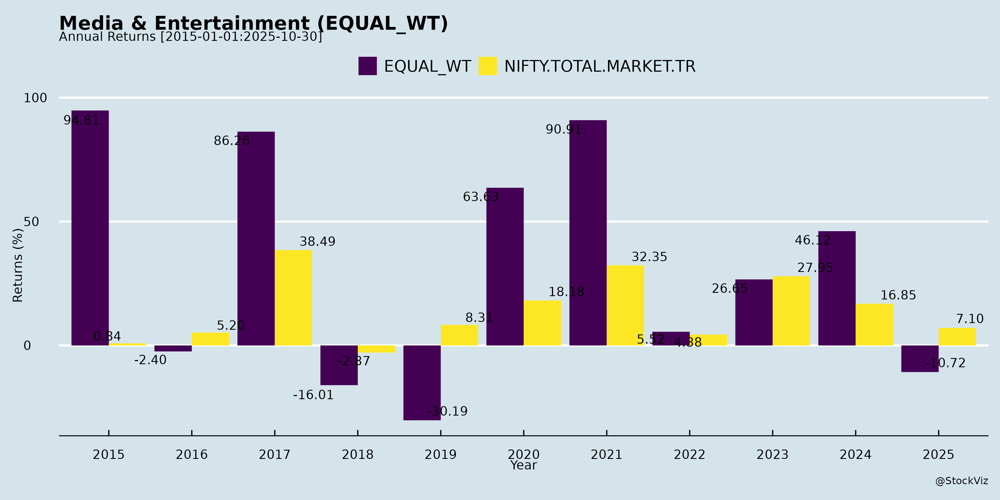
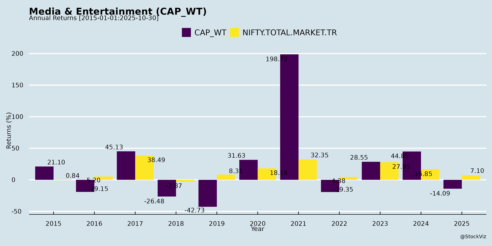
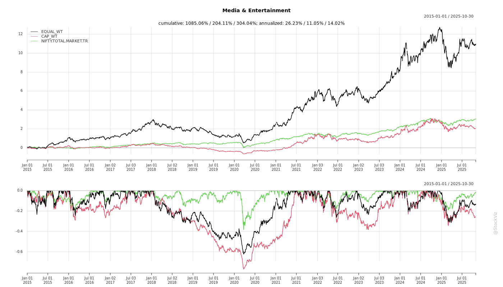
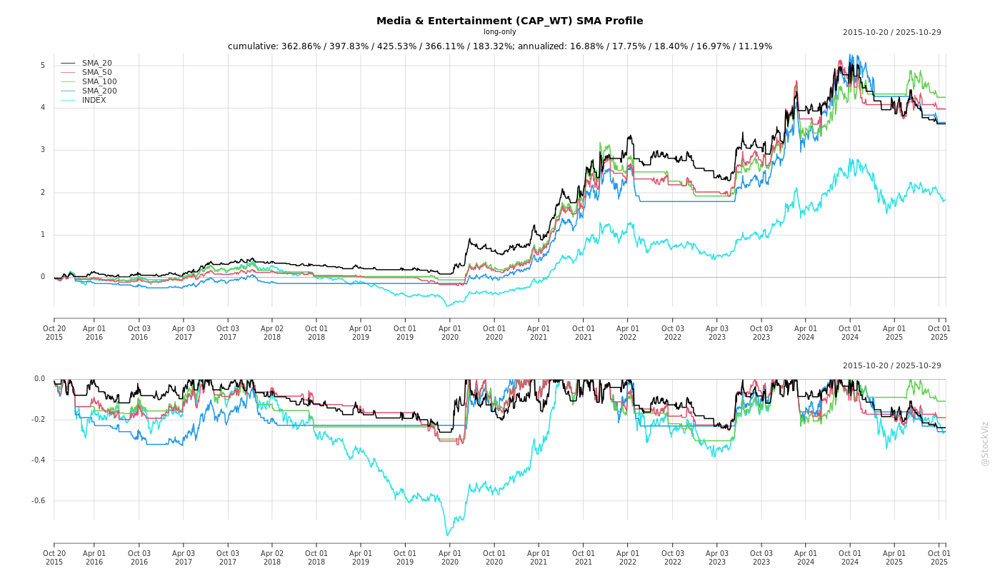
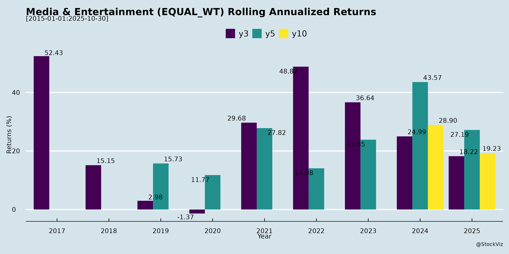
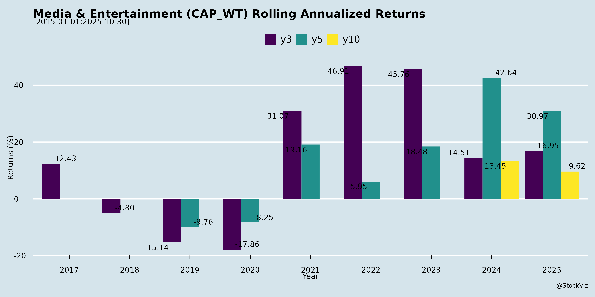

asof: 2025-11-30
Analysis of Indian Media & Entertainment (M&E) Sector (Based on Q2 FY26 Earnings Transcripts)
The provided documents cover key players in music (Saregama, Tips Music), TV/digital production (Balaji Telefilms), radio/digital audio (ENIL/Gaana, Music Broadcast/Radio City), and ancillary filings. They reflect a sector transitioning from traditional (radio/TV) to digital/live experiences, amid ad market softness but strong digital tailwinds. Below is a structured analysis of headwinds, tailwinds, growth prospects, and key risks.
Headwinds (Challenges Pressuring Near-Term Performance)
Tailwinds (Positive Structural Shifts)
Growth Prospects (Medium-Term Opportunities, FY26-FY27+)
| Segment | FY26 Growth Outlook | Key Drivers |
|---|---|---|
| Music/Digital Audio | 19-30% | Subscriptions, AI videos, artist mgmt. |
| Radio | Mid-single digit | Volume uptick, diversification (34% alternate rev at Radio City). |
| TV/Digital Video | Stable-Muted (rebuild phase) | OTT order books, micro-series. |
| Events/Live | 50-100%+ | Post-COVID demand. |
Key Risks
Summary
The Indian M&E sector faces short-term headwinds from ad softness and TV/radio cyclicality (revenues down 20-60% YoY in parts), but robust tailwinds in digital/live (100%+ growth) signal a pivot to high-growth areas. Growth prospects are strong at 20-30% CAGR for leaders (music/digital-led), fueled by subscriptions/AI/events, with profitability improving via cost cuts (e.g., Radio City +₹6-7cr/qtr savings). Key risks center on execution delays and policy, but cash-rich balance sheets (₹137-362cr across cos) provide buffers. Overall, bullish medium-term (FY27+), with digital/subscriptions as key unlockers; evaluate on TTM/12M basis due to lumpiness. Sector poised for 15-25% structural growth as consumption rises (400mn+ internet users).
asof: 2025-12-03
Summary Analysis: Indian Media & Entertainment (M&E) Sector
Based on the provided regulatory filings from key listed M&E companies (e.g., Prime Focus, Saregama, Network18, Balaji Telefilms, ENIL, Shemaroo, Music Broadcast/Radio City, Radaan Mediaworks), the sector exhibits a mixed outlook. Capital raises and international expansions signal resilience, but persistent litigation, tax disputes, liquidity strains, and qualified audits highlight vulnerabilities. Below is a structured analysis of headwinds, tailwinds, growth prospects, and key risks.
Headwinds (Challenges Pressuring the Sector)
Tailwinds (Supportive Factors)
Growth Prospects
Key Risks
| Risk Category | Details | Impact Level | Mitigation Noted |
|---|---|---|---|
| Liquidity/Going Concern | Negative working capital, unpaid dues (Radaan); high finance costs (₹243 Cr FY25). | High (qualified audits) | Management confidence in revival/obligations. |
| Litigation/Tax | SIMCA suit (ENIL), GST notice (Shemaroo ₹30L); statutory non-compliances. | Medium | Ongoing HC hearings; no material financial impact claimed. |
| Regulatory/Compliance | Lock-ins on preferential shares (Prime Focus: up to May 2027); CCI approvals (Network18). | Medium | Filings via NEAPS; approvals secured. |
| Operational | CWIP ageing (Radaan ₹1,920 Cr, cancellation planned); subsidiary underperformance. | High | Shareholder approvals for cancellations; revival plans. |
| Market/External | Music royalties, COVID legacy; foreign sub unaudited (Radaan Singapore). | Medium | Arm’s-length transactions; diversification (Dubai WOS). |
Overall Outlook: Moderately positive with tailwinds from capital access and global push (e.g., Saregama/Prime Focus), but headwinds dominate smaller players (Radaan). Growth hinges on digital/live events (projected via Dubai entity), but risks from liquidity/litigation could amplify in a high-interest environment. Sector resilience shown via disclosures/compliances, but monitor Q3 FY26 results for trends. Investors should prioritize companies with clean audits and international diversification.
asof: 2025-11-30
Based on the provided documents (primarily Q2 FY26 earnings transcripts from Saregama, Balaji Telefilms, ENIL (Mirchi/Gaana), Music Broadcast (Radio City), and ancillary filings from Tips Music, Shemaroo, and Network18), the Indian Media & Entertainment (M&E) sector exhibits a mixed outlook. The analysis draws from music, radio, TV/digital content, events, and OTT segments. Key insights are derived from management commentary on revenues, costs, market dynamics, and strategies.
| Segment | Q2 FY26 Growth (YoY) | FY26/Future Outlook |
|---|---|---|
| Music/Digital | +12-149% | 19-30% CAGR |
| Events/Non-FCT | +42-101% | High double-digits |
| Radio FCT | Flat/Single-digit | Single-digit |
| TV/Video | -39-59% | Recovery via pipeline |
The Indian M&E sector is in transformation mode, with digital/music/events as high-growth engines (20-100%+ YoY) offsetting traditional radio/TV headwinds (flat/declining ad spends, lumpiness). Tailwinds from Gen AI, subscriptions, and live events signal 20-30% medium-term revenue CAGR potential, driven by 400M+ digital users and diversification. However, ad slowdowns and free-tier dominance pose near-term risks, with profitability hinging on subscription ramps and cost discipline (e.g., ₹6-7Cr/Q savings at Radio City). Companies with strong cash (₹100-300Cr+), IP (Saregama catalogue), and hybrid models (ENIL/Balaji) are best positioned. Bull case: Subscription hockey-stick + events boom (EBITDA 30%+). Bear case: Prolonged ad weakness + delayed subs (margins <20%). Overall, cautiously optimistic for FY26 recovery via Q3/Q4 pipelines.
asof: 2025-12-03
The provided documents cover unaudited Q2/H1 FY26 financial results (Sep 2025) and related disclosures from key listed players: Saregama, Tips Music, Prime Focus, ENIL (Radio), Shemaroo, Music Broadcast (Radio City), Balaji Telefilms, Network18, Cinevista, Next Mediaworks, Silly Monks, and Radaan. These represent diverse sub-sectors (music, radio, TV/film production, digital content). Overall, the sector shows resilience in music/digital amid traditional media headwinds, with revenue growth in profitable segments but persistent losses in radio/TV. Aggregate revenue trends positive (~10-20% YoY in music leaders), but EBITDA margins volatile (5-20%). Key insights below.
| Risk Category | Details | Impacted Cos. | Mitigation |
|---|---|---|---|
| Regulatory/Legal | Royalty disputes (PPL: ENIL/Radio City); GST (Shemaroo Rs. 70 Cr); NCLT petitions (Music Broadcast). | Radio/TV (ENIL, Radio City, Shemaroo) | Appeals/Deposits; stays granted. |
| Liquidity/Going Concern | Negative net worth (Radaan, Shemaroo, Cinevista); high debt (Shemaroo Rs. 290 Cr). | Loss-makers (Shemaroo, Radaan) | Revival plans; asset sales (Radaan property unwind). |
| Impairment/Asset Quality | Untested sub investments (Radaan Rs. 9L); prior impairments (ENIL Rs. 35 Cr). | Holding cos (Radaan) | Digital revival (Singapore sub). |
| Competition/Shift | Digital disruption eroding radio/TV ads (ENIL revenue flat). | Traditional (ENIL, Balaji) | Diversification (Saregama Artist/Video). |
| Macro | Ad slowdown; content costs inflation. | All | Cost controls; streaming growth. |
Overall Outlook: Selective Optimism. Music/digital (Saregama/Tips: 20-30% growth) thriving; radio/TV need restructuring. Sector FY26 growth ~12-15% (music-led), but risks from legacy issues. Watch: Digital ad recovery, royalty resolutions. Recommendation: Favor music pure-plays; monitor radio deleveraging.
asof: 2025-11-30
Based on the provided documents from key players (Prime Focus, Saregama, Network18, TIPS Music, Balaji Telefilms, ENIL/Radio Mirchi & Gaana, and Music Broadcast/Radio City), here’s a synthesized analysis of the Indian Media & Entertainment (M&E) sector. These announcements reflect Q2/Q3 FY26 (H1 FY26) performance amid a transitional phase marked by digital acceleration and traditional media headwinds. The sector shows resilience through diversification, with aggregate revenue growth (e.g., 11-24% YoY across firms) despite ad softness.
| Metric | H1FY26 Snapshot (Across Cos.) |
|---|---|
| Revenue Growth | 8-24% YoY (Digital-led) |
| EBITDA Growth | 7-28% YoY |
| Key Drivers | Digital (50%+ mix), Events, Licensing |
Overall Outlook: Optimistic with Caution. Tailwinds from digital diversification outweigh headwinds, projecting 10-15% sector growth FY26+. Firms like Saregama/ENIL exemplify resilience (20%+ digital ramps). Risks mitigated by cash-rich BS (ENIL: ₹345Cr cash) and IP moats, but ad recovery key for sustained PAT expansion. Investors should monitor Q3 ad trends and digital ARPU.
Copyright © 2023 SAS Data Analytics Pvt. Ltd. All rights reserved.